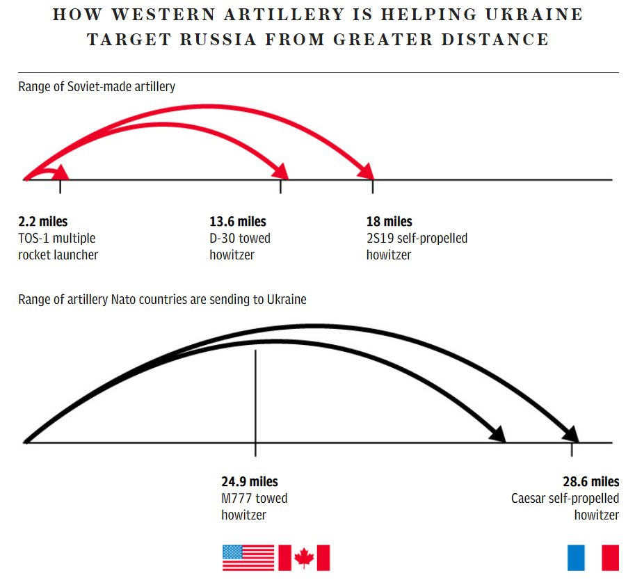
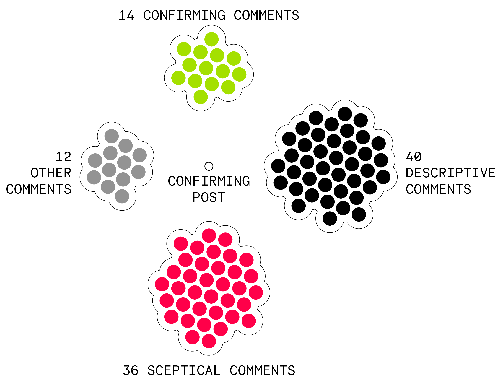

Moderately misleading data visualisation, shared with both confirming and sceptical positions.

Below you can explore the deatils of the two posts that shared the data visualisation with two different positions.
✅ CONFIRMING POST
"Useful infographic illustrating how arriving Western artillery systems can help Ukraine out-range Russia's big guns"
The text It expresses explicit support for the information presented in the infographic, highlighting the usefulness of the visualization in illustrating the strategic advantage of Western artillery systems for Ukraine.
The text aligns with the narrative that these systems can out-range Russian artillery, thereby implicitly trusting and endorsing the data visualisation's narrative.
✹ SOCIAL NETWORK
This post was shared on 9GAG.
9GAG is a social media website and online platform that focuses on user-generated content.
It became popular for its entertaining content, including funny images, memes, and gifs.
The platform has a wide reach and has become a significant part of internet culture, especially among younger audiences.
✹ TOTAL ENGAGEMENT
This post received 256 comments, 2300 likes and 250 dislikes.
The total engagement of the post is 2306, which is the result of summing together
number of comments (256), number of likes (2300) and subtracting the number of dislikes (250).
✹ POSITION OF THE COMMENTS
The post received a total amount of 256 comments, among which 112 were retrieved and classified depending on their position, as shown below.

The diagram shows the confirming post in the center and all the comments classified depending on their position.
There seems to be a predominance of sceptical and descriptive comments, with a notable portion questioning the infographic's accuracy or providing neutral details about artillery systems.
Confirming comments were less frequent, suggesting cautious or reserved endorsement of the information presented. This pattern indicates a critical engagement with the content
✹ MORE ON COMMENTS' POSITION
Now that you are familiar with the general distribution of the comments, it is time to see some more details! 👀
The button below will led you to another page where you can explore all the 112 comments and their positions.
Take me there ↗
🤨 SCEPTICAL POST
"Speaking of howitzers, there were also diagrams out there explaining the range that caused such misunderstandings. [Russia] - TOS-1 rocket, range 2.2 miles - D-30 howitzer, range 13.6 miles - 2S19 self-propelled Howitzer, range 18 miles [Ukraine] ・M777 howitzer (US), range 24.9 miles ・Caesar self-propelled howitzer (France), range 28.6 miles https://t.co/biQaUxHCAK"
The post focuses on clarifying "misunderstandings" by providing specific artillery range data for Russian and Ukrainian systems.
It questions the accuracy or interpretation of existing information, aiming to correct or challenge the narrative with detailed figures and a source link.
✹ SOCIAL NETWORK
This post was shared on X.
X, formerly known as Twitter, is a social networking and microblogging platform where users can post messages known as "tweets," share news, and interact with one another through replies, retweets, and likes. Users can follow each other to see updates in their feeds. X supports various media types, including images, videos, and links to other websites.
✹ TOTAL ENGAGEMENT
This post received 2 comments, 105 likes. It was reposted 37 times and quoted 1 time.
The total engagement of the post is 145, which is the result of summing together
number of comments (2), number of likes (105), number of reposts (37) and number of quotes (1).
✹ POSITION OF THE COMMENTS
The 2 comments to this post belong to different positions:
Below you can explore the deatils of the two posts that shared the data visualisation with two different positions.
✅ CONFIRMING POST
"Useful infographic illustrating how arriving Western artillery systems can help Ukraine out-range Russia's big guns"
The text It expresses explicit support for the information presented in the infographic, highlighting the usefulness of the visualization in illustrating the strategic advantage of Western artillery systems for Ukraine. The text aligns with the narrative that these systems can out-range Russian artillery, thereby implicitly trusting and endorsing the data visualisation's narrative.
✹ SOCIAL NETWORK
This post was shared on 9GAG.
9GAG is a social media website and online platform that focuses on user-generated content. It became popular for its entertaining content, including funny images, memes, and gifs. The platform has a wide reach and has become a significant part of internet culture, especially among younger audiences.
✹ TOTAL ENGAGEMENT
This post received 256 comments, 2300 likes and 250 dislikes.
The total engagement of the post is 2306, which is the result of summing together number of comments (256), number of likes (2300) and subtracting the number of dislikes (250).
✹ POSITION OF THE COMMENTS
The post received a total amount of 256 comments, among which 112 were retrieved and classified depending on their position, as shown below.
The diagram shows the confirming post in the center and all the comments classified depending on their position.
There seems to be a predominance of sceptical and descriptive comments, with a notable portion questioning the infographic's accuracy or providing neutral details about artillery systems.
Confirming comments were less frequent, suggesting cautious or reserved endorsement of the information presented. This pattern indicates a critical engagement with the content
✹ MORE ON COMMENTS' POSITION
Now that you are familiar with the general distribution of the comments, it is time to see some more details! 👀
The button below will led you to another page where you can explore all the 112 comments and their positions.
Take me there ↗
🤨 SCEPTICAL POST
"Speaking of howitzers, there were also diagrams out there explaining the range that caused such misunderstandings. [Russia] - TOS-1 rocket, range 2.2 miles - D-30 howitzer, range 13.6 miles - 2S19 self-propelled Howitzer, range 18 miles [Ukraine] ・M777 howitzer (US), range 24.9 miles ・Caesar self-propelled howitzer (France), range 28.6 miles https://t.co/biQaUxHCAK"
The post focuses on clarifying "misunderstandings" by providing specific artillery range data for Russian and Ukrainian systems. It questions the accuracy or interpretation of existing information, aiming to correct or challenge the narrative with detailed figures and a source link.
✹ SOCIAL NETWORK
This post was shared on X.
X, formerly known as Twitter, is a social networking and microblogging platform where users can post messages known as "tweets," share news, and interact with one another through replies, retweets, and likes. Users can follow each other to see updates in their feeds. X supports various media types, including images, videos, and links to other websites.
✹ TOTAL ENGAGEMENT
This post received 2 comments, 105 likes. It was reposted 37 times and quoted 1 time.
The total engagement of the post is 145, which is the result of summing together number of comments (2), number of likes (105), number of reposts (37) and number of quotes (1).
✹ POSITION OF THE COMMENTS
The 2 comments to this post belong to different positions: